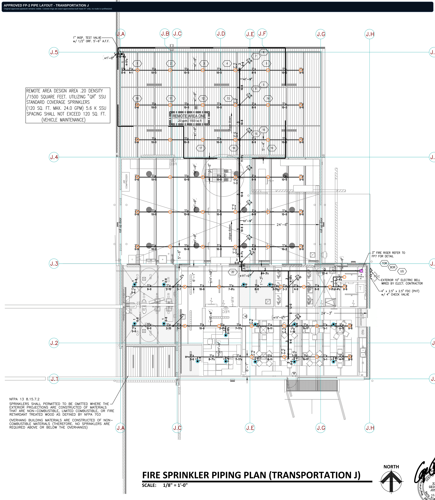

Transportation J - approved FP-2 pipe layout
The original City-approved and as-built piping plan is the visible underlay. This proof overlays only the 68 immutable approved/as-built head coordinates, so an operator can inspect the real branch layout, pipe directions, cross-section callouts, hydraulic box, and riser reference before any routing engine acts.
Approved/as-built crop pixel-identical53 upright + 15 pendent headsSemantic pipe graph still held

FP-2 / page 2Approved and as-built source page
68 exact XY headsOriginal vector symbols, not generated placements
0 synthesized routesPipe sizes, elevations, hydraulics, and release remain closed
Approved PDF SHA-256: 6da51cbd5bdbf34861502630311f8d0e3d4c8e3dcb61896ba614ff634fde8421